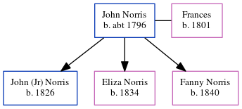

John Norris c1796 -
[ Home ] | [ Calendar ] | [ Surnames Index ] | [ Census Index ] | [ Family History ]John Norris was born c. 17961 and had 3 children with Frances: John (jr), Eliza and Fanny. In 1841, he was living in Lyme Regis, Dorset, England1.
Children
- John (jr) was born in 1826
- Eliza was born in 1834
- Fanny was born in 1840
Citations
- 1841 England Census Online publication - Provo, UT, USA: The Generations Network, Inc., 2006.Original data - Census Returns of England and Wales, 1841. Kew, Surrey, England: The National Archives of the UK (TNA): Public Record Office (PRO), 1841. Data imaged from the National
Family Tree
Generated by ged2site. Last updated on Jun 6, 2024